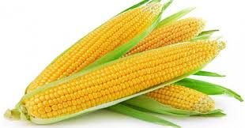

<< Daftar Resep
Mengenal Bahan Makanan
Jagung

Jagung (Zea mays ssp. mays) adalah salah satu tanaman pangan penghasil karbohidrat yang terpenting di dunia, selain gandum dan padi. Bagi penduduk Amerika Tengah dan Selatan, bulir jagung adalah pangan pokok, sebagaimana bagi sebagian penduduk Afrika dan beberapa daerah di Indonesia.
Pada masa kini, jagung juga sudah menjadi komponen penting pakan ternak. Penggunaan lainnya adalah sebagai sumber minyak pangan dan bahan dasar tepung maizena.
Berbagai produk turunan hasil jagung menjadi bahan baku berbagai produk industri farmasi, kosmetika, dan kimia.
Diagram tanaman jagung.
Jagung merupakan tanaman model yang menarik[, khususnya di bidang biologi dan pertanian.
Sejak awal abad ke-20, tanaman ini menjadi objek penelitian genetika yang intensif, dan membantu terbentuknya teknologi kultivar hibrida yang revolusioner. Dari sisi fisiologi, tanaman ini tergolong tanaman C4 sehingga sangat efisien memanfaatkan sinar matahari.
Dalam kajian agronomi, tanggapan jagung yang dramatis dan khas terhadap kekurangan atau keracunan unsur-unsur hara penting menjadikan jagung sebagai tanaman percobaan fisiologi pemupukan yang disukai
Kembali Ke Daftar Menu